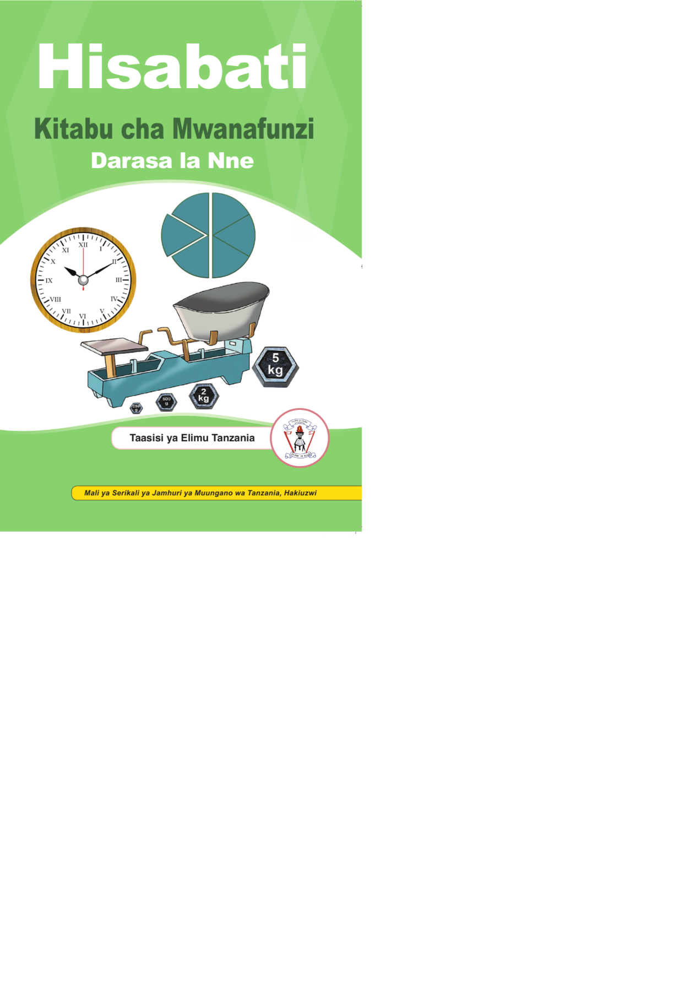

Jalada la mbele. Hisabati. Kitabu cha Mwanafunzi. Darasa la Nne. Jalada lina mandharinyuma ya kijani. Katikati kuna michoro mitatu inayohusiana na Hisabati: saa yenye mishale, duara lililogawanywa katika sehemu, na mzani wenye vipimo vya uzani. Chini limeandikwa jina la mchapishaji, Taasisi ya Elimu Tanzania, pamoja na nembo yake. Sehemu ya chini kabisa imeandikwa: Mali ya Serikali ya Jamhuri ya Muungano wa Tanzania, hakiuzwi.
